The George Eastman House
Wed, 15 Feb 2012 00:01:00 -0600
The George Eastman House
The home and now museum of Kodak's founder. This surprisingly reasonably-sized complex located in a residential neighborhood is not just a simple testament to the life and accomplishments of George Eastman. It’s the epicenter of everything Kodak and George Eastman once proudly stood for.
It houses one of the biggest collections of photography equipment in the world. The ever-changing photography exhibits are unique, different, and expansive. It’s home to the third largest film archive in the world, including the private collections of Ken Burns, Spike Lee, and Martin Scorsese. After a twelve and half million-dollar expansion in the late 1980s, it also became a hub for film preservation technology. The Dryden Theatre brings film and photography luminaries from across the world to Rochester for special programs, screenings, and award ceremonies.
The house itself was completed in 1905 with an assortment of modern marvels, including a central air conditioning and vacuuming system, internal telephone wiring with 21 stations and a huge pipe organ located in the middle of the central room.
Eastman was also an avid explorer and huntsman. He would go on regular safaris to Africa, bagging himself elephants, rhinos, and antelope. He would then would use the taxidermied animals as decorations, ashtrays, and umbrella holders, which are all on display. (The elephant head is a facsimile based on a plaster cast of the original. Legend has it that the real elephant head is buried under the Rochester Zoo.)
On March 4th, 1932, riddled with a degenerative disorder that affected his spine and rendering him hardly able to walk, he went into his bedroom and shot himself in the heart. He left a note that read, "To my friends: my work is done. Why wait?"
You are not able to enter the room, but the note is on display.
Read more about The George Eastman House on Atlas Obscura...
Category: Museums and Collections, Unique Collections, Eccentric Homes
Location: Rochester, New York, US
Edited by: OrangeRavens, Rachel
California Academy of Sciences Herpetology Department
Tue, 14 Feb 2012 21:05:00 -0600
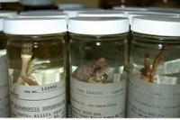
California Academy of Sciences Herpetology Department
Over 300,000 preserved amphibians and reptiles in jarsWhile most visitors to the California Academy of Sciences in Golden Gate Park are ogling the albino alligator, those in the know are looking through the over 300,000 specimens from 166 countries that are housed in the Academy’s Herpetology Department.
This massive collection of reptiles and amphibians, which includes the Standford collections transferred in 1962, was started by one Galapagos toroise carapas specimen in 1853. It includes the the largest collection of Philippine amphibians and reptiles in the world. Over the last 160 years the collections has grown through donations and exhibitions.
Today the Herpetology Department has exhibitions to Sao Tome and Pricipe (small islands off the west coast of Africa), Myanmar and China, and is viewable by appointment only.
Read more about California Academy of Sciences Herpetology Department on Atlas Obscura...
Category: Fascinating Fauna, Natural History
Location:
Edited by: Tre, Annetta, Rachel
St. Valentine’s Bones, Glasgow
Tue, 14 Feb 2012 12:15:00 -0600
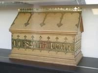
St. Valentine’s Bones, Glasgow
Glasgow’s piece of the patron saint of loveIn 1868, a wealthy French family made a donation to the the Franciscan church: a small wooden box labeled "Corpus Valentini Martyris," or ‘the Body of Saint Valentine.’ The church sent the relic to Saint Francis’ Church, in the rundown neighborhood of Gorbals, Glasgow. It sat there in almost complete anonymity for over a century. In 1999, it was moved to the nearby, Blessed St John Duns Scotus, where it has been given a place of honor at the church’s entrance. Every Valentine’s Day, it is decorated with flowers while the friars say prayers for lovers. It has even led Glasgow to label itself the “City of Love.”
Little is really known of the real man (or men) behind the myth. What is known (more or less) is that at least two men by the name of Valentine (Valentinus) were known in Italy and died in the late 3rd century, and a third Valentine was located in North Africa around the same time. The two Italians were buried along Via Flaminia. As a saint, Valentine first gained real notoriety in 496 when Pope Gelasius I made February 14, originally part of the Roman festival of Lupercalia, a feast day dedicated to St. Valentine. The stories of the different men seem to have merged into one over time, with most of the mythology about Valentine being a patron of lovers, helping early Christian couples to marry in secret, only dating to the 14th century and the writings of Geoffrey Chaucer.
Today, there are no less than ten places claiming to house the relics, all around the world, including the Basilica of Santa Maria in Rome, Roquemaure, France, and Dublin, Ireland.
Read more about St. Valentine’s Bones, Glasgow on Atlas Obscura...
Category: Memento Mori, Relics and Reliquaries
Location: Glasgow, United Kingdom
Edited by: HJHausman, Rachel, Annetta
Relics of Saint Valentine at the Whitefriar Street Church
Tue, 14 Feb 2012 11:44:00 -0600
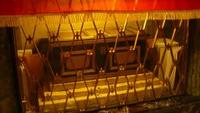
Relics of Saint Valentine at the Whitefriar Street Church
The remains of one of the many St. Valentines resides in Dublin, Ireland.John Sprat was an Irish Carmelite that was known for his abilities as a preacher and dedicated work with the destitute in the city of Dublin. While visiting Rome, his fame had apparently preceded him, and he became hot on the Jesuit circuit, giving sermons and receiving tokens of esteem from his peers.
One of the more impressive tokens he was gifted were the remains of Saint Valentine by Pope Gregory XVI, which had recently been uncovered during grave restorations. Sprat brought the Reliquary containing the relics to his Whitefriar Street Church in Dublin, where they remained popular until the death of their popular procurer. With the death of Sprat, the relics went into storage and were not venerated until the church went through restorations in the 1950's/1960's. An altar and shrine were created and are now watched over by a statue depicting the saint holding a crocus, carved by Irene Broe.
Today the shrine is popular with couples who come to pray for St. Valentine to watch over their lives together and to celebrate the feast day of February 14th which includes the Blessings of the Rings for those about to marry. The Reliquary is placed on the high altar and venerated at the Masses.
So what does this particular collection of St. Valentine relics contain? According to an inscription on a gold plate attached to the casket: This shrine contains the sacred body of Saint Valentinus the Martyr, together with a small vessel tinged with his blood.
More specifically, the Reliquary contains “some” of his remains, never claiming to have all of them, and a small vessel tinged with his blood-all of which is contained within a small, wax-sealed box with a red silk ribbon around it. This box is located in the casket, which is occasionally opened to check on the contents. The smaller box remains sealed.
Read more about Relics of Saint Valentine at the Whitefriar Street Church on Atlas Obscura...
Category: Relics and Reliquaries
Location: Dublin, Ireland
Edited by: Rachel
Skull bits of St. Valentine in Chelmno
Tue, 14 Feb 2012 08:25:00 -0600
Skull bits of St. Valentine in Chelmno
A silver reliquary holds what may or may not be parts of the martyr's skull Preserved in a small silver reliquary in a parish church in Chelmno, a bit of bone is revered as the skull of St. Valentine, patron saint of lovers (as well as bee keepers and epilepsy, among other things).
The relics have been in the possession of the church for "several hundred years" and are the focal point of the city's annual celebrations on February 14. The only problem is that his skull is inconveniently already on display in Rome.
The silver reliquary dates to around 1630, and was described in 1880 as follows: “...it is the saint’s head, or rather a small fragment of it. The relic is placed in an octagonal reliquary which is made of silver, is one foot high and weighs about three pounds. On top of it there is a round dome-shaped lid where the relic is kept and where it can be seen and kissed through the glass. The relic is the size of about two fingers.”
An altar devoted to the saint sits next to the main altar, separating the main nave from the south one, decorated with a painting of the martyr’s decapitation.
Little is really known of the real man (or men) behind the myth. What is known (more or less) is that at least two men by the name of Valentine (Valentinus) were known in Italy and died in the late 3rd century, and a third Valentine was located in North Africa around the same time. The two Italians were buried along Via Flaminia. As a saint, Valentine first gained real notoriety in 496 when Pope Gelasius I made February 14, originally part of the Roman festival of Lupercalia, a feast day dedicated to St. Valentine. The stories of the different men seem to have merged into one over time, with most of the mythology about Valentine being a patron of lovers, helping early Christian couples to marry in secret, only dating to the 14th century and the writings of Geoffrey Chaucer.
Today, there are no less than ten places claiming to house the relics, all around the world, including the Basilica of Santa Maria in Rome.
Read more about Skull bits of St. Valentine in Chelmno on Atlas Obscura...
Category: Relics and Reliquaries
Location: Chelmno, Poland
Edited by: Annetta, Rachel
Archie the Giant Squid
Mon, 13 Feb 2012 18:26:00 -0600
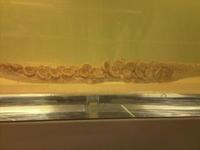
Archie the Giant Squid
The monster at the center of the Darwin Center Spirit CollectionHeld in a custom-made acrylic tank filled with a 10% solution of formol-saline, the giant squid at the center of the London Natural History Museum Spirit Collection was caught off the coast of the Falkland Islands in March 2004.
The 8.62 meter long creature is an Architeuthis dux, or giant squid, and known at the museum as "Archie." Although enormous, the giant squid is not actually the largest of the feared semi-mythical undersea ship eaters: that position of honor is reserved for the colossal squid, or Mesonychoteuthis hamiltoni.
Rarely seen, and even more rarely caught, this specimen was caught alive, although it did not remain that way for long. After death, it was transported to the Natural History Museum where it was frozen while a tank large enough to accommodate the huge specimen was designed and built.
The Spirit Collection at the London Natural History Museum holds about 22 million preserved zoological specimens, including the original collections of Sir Hans Sloane, an adventurous 18th century traveler and collector, who also is known for having introduced the drinking of chocolate milk to Europe. His collection alone numbered some 80,000 items. The new Darwin Centre opened in September 2009.
Archie's final resting spot is a specially built 9 meter long transparent tank, made by the same people who made tanks for Damien Hirsts' formaldehyde specimen installations.
The Spirit Collection (and Archie) can be visited on special guided tours.
Read more about Archie the Giant Squid on Atlas Obscura...
Category: Watery Wonders, Fascinating Fauna, Natural History
Location: London, United Kingdom
Edited by: Annetta, Rachel, Dylan
Dean's Blue Hole
Mon, 13 Feb 2012 10:20:00 -0600
Dean's Blue Hole
The world's deepest known blue holePlunging to a depth of 663 feet (202 meters) in a bay west of Clarence Town on Long Island, Dean's Blue Hole is the world's deepest known blue hole. A blue hole is a term that is often given to sinkholes that are filled with water, while the entrance to them is located beneath the surface.
While most other known blue holes only reach maximum depths of 360 feet, the 663 foot depth of Dean's Blue Hole makes it quite exceptional. At the surface, Dean's Blue Hole is roughly circular with a diameter ranging from 82-115 feet (25-35 meters). After one descends 66 feet below the surface, the hole widens considerably into a cavern with a diameter of 330 feet (100 meters).
In April 2010, professional diver William Trubridge broke a free-diving world record in the blue hole by reaching a depth of 302 feet (92 meters) without the use of fins. He took that even further when on December 14th, 2010, he swam to a depth of 331 feet (101 meters) on a single breath while using only his hands and feet for propulsion! Talk about amazing lung capacity!
Read more about Dean's Blue Hole on Atlas Obscura...
Category: Natural Wonders, Watery Wonders, Geological Oddities, Curious Caves
Location: New Providence Island, Bahamas
Edited by: TrevorShawnElia, Rachel
Renz Women's Penitentiary
Fri, 10 Feb 2012 01:24:00 -0600
Renz Women's Penitentiary
Destroyed by flood waters, prison now serves as a training ground for armed forces.When you first drive by this ominous building sitting in a field visible from the freeway, it appears to be out of place. Obviously abandoned, as evidenced by the vegetation emerging from the busted out windows and water stains creeping down the facade, it seems too large and in too central of an area to just be forgotten for so long. It appears that the field it sits in is cared for, yet the structure remains untouched, and there is no signage or indication as to what purpose it used to serve. An irresistible beacon to the curious urban explorer, closer examination reveals a series of increasingly threatening “No Trespassing” signs leading to the mystery building. Was it a hospital? A mental hospital? A haunted mental hospital for the criminally insane? A little digging and some chatty locals will uncover it's history-while not a haunted mental hospital for the criminally insane (darn it), it does have an intriguing past, once serving as a high-security women's penitentiary.
Renz Women's Penitentiary opened up in 1926, and operated as a prison farm, where inmates would raise chickens and grow produce. It was a medium-sized facility that held around 500-550 female offenders, and was built right in the flood plain of the Missouri River. In the “Great Flood of 1993”, when the Missouri and Mississippi Rivers both rose to devastating heights, 20 ft. above flood stage in some places-the prison was a causality in the disaster that caused $15 billion in damages throughout the Midwest.
As the river slowly rose, the Missouri Department of Corrections began moving critical equipment out of the prison, and then finally when the waters showed no sign of relenting, they conducted a peaceful and injury-free 2-day evacuation of the prisoners to other nearby facilities. Once the inmates were all safely relocated, staff went back to the prison with boats and moved as much furniture and equipment as possible to the 2nd and 3rd stories of the building, hoping that once the water level receded they could salvage what was left and restore the structure. The murky depths of the Missouri had other ideas, and didn't stop until it had crested at 38.6 feet, and then took it's sweet time to recede. By the time it was finished, it had flattened the 32 foot levy protecting the prison, rendered the building completely incapacitated, and left a new 15 ft. deep, 15-acre wide lake as a parting gift.
Stories of the buildings accessibility and safety are mixed. Some say they have entered easily, others say there are locks and guards. One substantiated rumor is that SWAT teams and possibly the military use the area to practice tactical maneuvers and Close Quarter Combat training, so breaking in is ill-advised, despite the temptation.
Read more about Renz Women's Penitentiary on Atlas Obscura...
Category: Crime and Punishment, Disaster Areas, Incredible Ruins
Location: Jefferson City, Missouri, US
Edited by: Rachel
Mount Tamalpais Aircraft Crash Site
Thu, 09 Feb 2012 23:00:00 -0600
Mount Tamalpais Aircraft Crash Site
Law-protected wreckage serves as a peculiar memorial for an almost forgotten World War II tragedyOn a wet and windy night in late November 1944, a US Navy plane crashed into Mount Tamalpais and killed eight aviators and crew. The aircraft had taken off from Naval Air Station in Alameda when it developed engine trouble shortly after takeoff. The squadron radioed that it was having mechanical problems as it headed past the Golden Gate Bridge and into the darkness. The plane was never heard from again.
The owner of the Mountain Home Inn on Panoramic Highway was the first to report the crash after hearing a loud noise and seeing a giant fireball just before midnight.
The next day, a few boys from Mill Valley found the wreckage scattered across a 300 yard area. The debris was still smoldering, including what was left of the eight Navy fliers. The boys later reported that the sight was so horrific that they had nightmares for years afterward.
The Navy came and cleared most the wreckage soon after the crash. However, a small portion of the debris was left behind and is still there today. Visitors will find mostly nondescript scraps of metal and rubber strewn about the hallowed ground, though it is rumored that one of the plane's machine guns is still missing among the wreckage.
Please be aware that the site and debris are US government property and therefore protected by law. Removal or tampering with the wreckage is a felony.
Read more about Mount Tamalpais Aircraft Crash Site on Atlas Obscura...
Category: Disaster Areas, Incredible Ruins
Location:
Edited by: Duck_Muscle, Annetta, Rachel
The JELL-O Gallery
Wed, 08 Feb 2012 21:03:00 -0600
The JELL-O Gallery
The birthplace of America's favorite fruit-flavored mystery dessertHave you always wondered how that wiggly Jell-O castle that your great aunt serves every Thanksgiving became "America's most famous desert", regardless of it's physically mystifying structure? There is a place that can solve this, and all your other Jell-O inquiries-the JELL-O Gallery in LeRoy, New York.
Located about 30 minutes from Rochester, New York, this small but very comprehensive museum explores the history and production of JELL-O. Created by a local townsman in 1897, JELL-O had humble beginnings as a LeRoy favorite, only to become an international sensation a few years later, taking the world by storm with it's fruity goodness.
The gallery explores the local connections, the creation process and several famous JELL-O advertising campaigns. Also within the gallery is an entire room devoted to JELL-O's most well-known spokesperson, Bill Cosby (he has visited the museum only once).
The original JELL-O factory, which closed down in 1964, is located nearby but now functions as a corporate office.
The gallery curators are knowledgeable and friendly. They love to talk JELL-O as well as share general knowledge and the history of the village of LeRoy. Ask them for a lunch recommendation, if anyone knows the direction to something tasty in LeRoy, it's them.
Read more about The JELL-O Gallery on Atlas Obscura...
Category: Museums and Collections
Location: Leroy Mountain, New York, US
Edited by: OrangeRavens, Rachel, Duck_Muscle
Rat Island
Wed, 08 Feb 2012 10:10:00 -0600

Rat Island
Legendary private island in the BronxLocated in the waters north of Manhattan lies two and a half acres of barren rock with quite a distasteful history, making it no stretch of the imagination that someone chose to give it the equally distasteful title of Rat Island.
Rat Island is part of a chain of tiny islands that sit in Long Island Sound. Originally it was purchased by New York City in the 1880s to be used as part of the Bronx’s Pelham Bay Park, but the lore attached to it is quite a bit darker. It is said that the ugly name comes from prisoners trying to flee from the nearby Hart Island; as they swam over, they wore boxes on their heads in the hopes of being mistaken for floating garbage. Rumor also has it that it was the home of a detention center for yellow fever victims. Most historians dispute this, as it would be unnecessary since Hart already had one near its prison.
Rat Island has switched hands many times over the past couple of centuries. It no longer belongs to the city and from the 1970s through 2010 it was owned by marine contractor, Red Brennen, who used it as a barge salvage yard. After he retired, he tried to sell in 2009 for $300,000 (the city valued it at $426,000). Unsuccessful, he waited a year and put it up for auction. It sold for $160,000 to local Bronx resident, Alex Schibli, who had been the island’s groundskeeper long before buying it. Schibli lives in the fishing community of City Island, which is one of the other islands in Long Island Sound. In fact, he lives so close to Rat Island that he frequently kayaks around it. Since it is a notorious spot for illegal parties, he took it upon himself to remove any debris left behind. Schibli is so infatuated that the island that he purchased it for the sake of preservation, but takes issue with the unattractive name, pointing out that the island is actually devoid of rats. He's mulling over the idea of renaming it completely, after his granddaughter. "Malina Island" has a much nicer ring to it, and might give the rock an opportunity to shed it's bad reputation.
Read more about Rat Island on Atlas Obscura...
Category: Watery Wonders
Location: Rat Island, New York, US
Edited by: HJHausman, Annetta, Rachel
RichArt's Art Yard
Tue, 07 Feb 2012 15:40:00 -0600
RichArt's Art Yard
In the midst of a residential town in Washington exists a property saturated with one man's artistic creationsOutsider artists and retired art instructor Richard Tracy, also known as RichArt, began working on transforming his property into an outlet of his artistic expression since 1985. Now anyone can visit his house in Centralia, Washington and see what he calls "The Art Yard".
The materials RichArt uses are far from biodegradable though they make for some interesting decorations. Styrofoam, reclaimed packaging material, and found objects make up the entirety of his creations. Richard Tracy carves, sculpts, and forms this material into figures such as animals and faces. There are also an amalgam of utilitarian objects that he has created such as tables and seats.
The pinnacle of his work is what he calls his "confessional", a hideaway in which he can sit and look over the world around him. As a well-educated individual and dedicated artist, Richard Tracy gives advice and lessons to aspiring artists and encourages them to follow their unique creative compass.
Read more about RichArt's Art Yard on Atlas Obscura...
Category: Outsider Art, Eccentric Homes
Location:
Edited by: bboas, Annetta, Rachel
Hanging Houses of Cuenca
Mon, 06 Feb 2012 23:03:00 -0600

Hanging Houses of Cuenca
Cliffside houses provide a spectacular view from their perilous perch above the valleyNestled in the the city of Cuenca, in the autonomous community of Castile-La Mancha is a fine example of the absolute maximization of available space that the 15th through 18th centuries could provide.
Perched high atop a hill, 85 miles East of Madrid, the City of Cuenca lacked the option to spread out as population grew, so they did the next best: they expanded upwards, and outwards.
Once a common sight throughout the entire city, these houses, know as “hanging houses” seem to cling perilously to rocky outcroppings. Sometimes topping out at seven or eight, gravity defying (for the age) stories, these rascacielos, or skyscrapers often extended out over the valley far below.
The only remaining, intact structure of this type is Las Casas Colgadas, translated literally as The Hanging Houses, is now the location of the Cuenca Spanish Museum of Abstract Arts as well as a restaurant.
Read more about Hanging Houses of Cuenca on Atlas Obscura...
Category: Architectural Oddities, Eccentric Homes
Location:
Edited by: Rachel, Seth Teicher
Eram Garden
Mon, 06 Feb 2012 11:00:00 -0600
Eram Garden
Named after a legendary garden called Eram in southern Arabia, built by order of Shaddad, an Arab king who wanted to compete with Paradise.Eram Garden (Bagh-e Eram), located along the northern shore of the Khoshk River in Shiraz, is one of the most famous and beautiful Persian gardens in all of Iran. It should be noted that the word 'Eram' is the Persian version of the Arabic word 'Iram' which means heaven in Islam's most holiest of books, the Qur'an. With its beautiful grounds, lush plant life and aesthetic attractions, it's easy to see why Eram evokes such a description.
With their beautiful flowers, refreshing air, aromatic myrtles and towering cypress trees, including one tree which is said to date back to 3000 years ago (Sarv-e naz), the Eram Gardens are a major tourist destination, especially during the spring.
Although no one is quite sure when construction of the gardens began, historical evidence suggests that the gardens were built during the Seljuk Dynasty (11th-14th centuries) under the rule of one of its most celebrated monarchs, Ahmad Sanjar. Like many other attractions in Shiraz, the Eram Gardens have been restored and repaired by the Zand kings of the Zand Dynasty (1750-1794), but during the later period of the Zand Dynasty, the garden changed hands to a Qashgai tribal chief, Mohammad Qoli Khan.
Mohammad Qoli Khan ordered the construction of the original mansion that stood on the grounds in the early 18th century, and planted various trees and plants in the garden including pine, orange, cypress and persimmon trees. Later on, during the rule of King Nasser ed-din of the Qajar Dynasty (1785-1925) Mirza Hassan Ali Khan Nasir-al Mulk bought the gardens from the Qashgai tribes and began construction on the present pavilion that now stands in the gardens.
As noteworthy as the gardens themselves, the pavilion was constructed by a local Shirazi architect, one Mohammad Hassan. The beautiful three-story structure was constructed based on the Safavid and Qajar styles of architecture, and includes tiles inscribed with poems from the famed Persian poet Hafez.
Read more about Eram Garden on Atlas Obscura...
Category: Natural History, Cultures and Civilizations , Architectural Oddities, Horticultural Marvels
Location: Shiraz, Iran
Edited by: TrevorShawnElia, Rachel
Lake View Cemetery
Sun, 05 Feb 2012 10:47:00 -0600
Lake View Cemetery
A beautiful final resting place for some of the noteworthy deceased.Located on a breathtaking expanse atop Capitol Hill, this burial ground was established in 1872 as the Seattle Masonic Cemetery, changing its name to the Lake View Cemetery in 1890. Now nestled in the middle of an affluent neighborhood, the cemetery serves as the final resting place of several iconic American figures, including poet Denise Levertov, painter Cordelia Wilson, founder of Nordstrom department store John W. Nordstrom, and a number of Seattle's great pioneers. Having been founded only seven years after the Civil War, this graveyard has become deeply intertwined in America's short but rich history.
Arguably the most popular plot for celebrity grave hunters is that of Brandon and Bruce Lee, father and son martial artists and film actors. Buried side-by-side, Brandon occupying the plot originally reserved for his mother, both men died tragically while on the set of films they were working on. Bruce was 32 when he suffered cerebral edema while doing dubbing work at the studio. Brandon was only 28 when he was accidentally shot on the set of “The Crow”, a major motion picture that was likely to skyrocket his fledgling acting career.
Read more about Lake View Cemetery on Atlas Obscura...
Category: Catacombs, Crypts, & Cemeteries, Dead Explorers
Location:
Edited by: bboas, Rachel, Seth Teicher
Clone Factory
Fri, 03 Feb 2012 02:37:00 -0600
Clone Factory
Japanese company creates clone dolls that reside in the "uncanny valley" Japan is blazing the trail when it comes to developing synthetic humans. Seemingly lacking whatever it is that tends to give Westerners the willies when it comes to human replicas, the Japanese have been working steadily toward personal clones becoming an attainable household commonality. Androids are still a long way off from being something that just anyone desiring a creepy facsimile of themselves can possess, but the Clone Factory in Akihabara has the next best thing.
For a mere $1,750, the Clone Factory will take a digital 3D model of your head, print it out on a 3D printer, and just like that you have a horrifying 20-inch doll that looks exactly like you. Once your mini head is ready, you may chose a body and an outfit for your tiny monstrosity. Many customers prefer a look that represents a special event, weddings being the most popular, although anything from a sailor outfit to a stormtrooper body is available. Once you've committed to creating a pocket-sized version of yourself, you might as well go all out.
Read more about Clone Factory on Atlas Obscura...
Category: Strange Science, Commercial Curiosities
Location: Tokyo, Japan
Edited by: Rachel
Old Trapper's Lodge Statues
Thu, 02 Feb 2012 17:16:00 -0600
Old Trapper's Lodge Statues
A wild west scene starring life-sized wooden statues hides in the trees behind Pierce CollegeIn 1941, former tracker John Ehn opened a motel in Burbank and called it “The Old Trapper's Lodge”. Ehn filled it with western memorabilia, weapons and pelts that represented his earlier vocation, hoping to attract tourists with a slick gimmick. When his gimmick failed to bring in the desired amount of business, John Ehn decided to go big.
Local legend has it that he decided giant statues were the way to go, and hired sculptor Claude Bell of Cabazon Dinosaur and Knott's Berry Farm fame to make him a few. After observing Bell's technique for a few days, he decided it wasn't rocket science and he could easily finish the job himself. For the next 30 years, Ehn filled the property with crudely-made cowboys, indians, miners, saloon girls and an entire cemetery scene depicting his version of a “Boot Hill”.
In 1985 the land was sold, and the statues were eventually relocated to Pierce College, where anonymous "mystery"volunteers touch up paint and keep the rustic location accessible by clearing brush and keeping the trail clear for visitors.
Read more about Old Trapper's Lodge Statues on Atlas Obscura...
Category: Unusual Monuments, Strange Statues
Location:
Edited by: Rachel
Explorers Club Headquarters
Thu, 02 Feb 2012 09:40:00 -0600
Explorers Club Headquarters
A treasure trove of exploration artifacts, books, and artworkBehind appropriately impressive heavy doors and ornate turn of the century stained glass windows, the Explorers Club headquarters on East 70th street looks like it has been been there forever - but in fact it’s only the most recent home of the wandering organization.
Originally founded in 1904 by a group of former expedition members to promote and share stories of exploration, the club found its first headquarters on West 67th. Sixty-one years and five buildings later, they purchased the 1910 Jacobean townhouse on East 70th Street originally built for Stephen Clark, heir to the Singer Sewing Machine fortune and benefactor of many public works in the city.
It is now known as the Lowell Thomas building, after the adventuring journalist and Explorers Club member best remembered for his dramatic WWI footage that introduced Lawrence of Arabia to the world.
A century’s worth of amassed exploration treasures fill the building’s four floors, from the ground floor lounge’s overstuffed leather furniture and cozy fireplace to the polar bear taxidermy that greets you on the second. An enormous globe used by Thor Heyerdahl to plot his famous Kon Tiki expedition across the Pacific sits in a place of honor on the ground floor, near a display case holding items from the Club’s archives.
Under an ornate coffered ceiling and punctuated with a huge painting of the ill-fated Greeley expedition, the second story library holds approximately 13,000 books and 5,000 maps and a variety of audiovisual materials behind paned glass doors. The main meeting room at the front is decorated with expedition flags from historic exploration, including NASA adventures.
The uppermost floor is home to their research archives, holding the club’s impressive collection of manuscripts, art, and artifacts, much of which was donated by members returning from expeditions.
The Trophy Room on the same floor is the club's showpiece, with an enormous table surrounded by exotic taxidermy, tusks and antlers of all varieties, and display cases holding intriguing objects from the far corners of the world, including rocks from Everest and the famous “yeti scalp” (note: may or may not be made of actual yeti).
Scaffolding was just recently removed, revealing the results of a five year long refurbishment of the building’s facade, but work continues to preserve the building.
Read more about Explorers Club Headquarters on Atlas Obscura...
Category: Wonder Cabinets, Natural History, Repositories of Knowledge, Dead Explorers
Location: New York City, New York, US
Edited by: Annetta, Rachel, Seth Teicher
Lummis Castle el Alisal
Wed, 01 Feb 2012 13:31:00 -0600
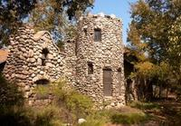
Lummis Castle el Alisal
Eccentric journalist builds himself a castle stone by stoneCharles F. Lummis was an author and historian who, after dropping out of Harvard in 1881, decided to walk from Cincinnati to Los Angeles in a pair of street shoes. He had been offered a job as a reporter for the L.A. Times, and as he made his way across the country by foot, he captivated the nation with weekly letters of his escapades and detailed descriptions of the countryside he passed through.
Upon his arrival, he was rightfully named first city editor. Obviously a do-it-yourself kind of guy, when faced with the issue of where he would hang his hat in his new city, he decided he'd like to live in a castle. Los Angeles did not have an abundance of castles for sale, so Lummis built himself one by hand out of stones he pulled out of the river.
By taking a much shorter walk than Lummis did, you can enjoy a free tour of his castle house and gardens, now a historical landmark displaying artifacts and tales of the adventures of this little known eccentric. The house is credited with being one of the first to spark the Arts & Crafts aesthetic that would soon monopolize architecture styles. Word on the street is that by asking for the “dirty tour”, you become privy to a much more interesting version of Lummis and his shenanigans.
Read more about Lummis Castle el Alisal on Atlas Obscura...
Category: Architectural Oddities, Eccentric Homes
Location:
Edited by: serflac, Rachel
Museum of Prosciutto di Parma
Wed, 01 Feb 2012 12:47:00 -0600
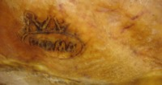
Museum of Prosciutto di Parma
Ham is serious business at the Prosciutto Museum-Serious, delicious business. Prosciutto di Parma is not just slivers of salty goodness -- It is a delicacy seeped in tradition and technique, and is the pride of the city of Parma. The fame of Parma ham goes all the way back to Roman times, and the secrets of curing as well as the mastery of the butcher craft have been fine-tuned and passed down for centuries.
The museum will take you on a journey through the gastronomic history of its ham, its origins, its presence in art, and the special micro-climate enjoyed by the region that insures its salt content and it's sweetness. You will also learn about the Consortium of safeguard that guarantees its quality. After learning more about this fine food than you ever thought you'd need to know, you will finally be rewarded with what you came for -- Prosciutto tasting.
Read more about Museum of Prosciutto di Parma on Atlas Obscura...
Category: Museums and Collections, Unique Collections
Location: Parma, Italy
Edited by: Rachel, Seth Teicher
Brain Museum
Tue, 31 Jan 2012 14:12:00 -0600
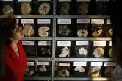
Brain Museum
Tucked behind the Institute of Neurological Science down a decrepit street resides the largest display of human brains in Latin America. The Brain Museum in Lima is not for those with a weak stomach. Run by Neuropathologist Diana Rivas, this one-of-a-kind collection contains over 3,000 examples of damaged brains and fetuses, displaying abnormalities caused by an array of neurological diseases, psychiatric disorders, and substance abuse damage.
Primarily existing as a must-see for neurology students and other academics in the field, the Brain Museum is also open to the public, in part to spread awareness of preventable brain diseases using formaldehyde-filled jars of the afflictions as a striking visual. The modestly-sized museum is packed with morbid examples of stroke, Alzheimer's, tumors and trichinosis, but the star of the show is the Creutzfeld-Jacob disease specimen, commonly known as the human strain of mad cow disease.
Collecting brains and deformed fetuses since 1947, the museum also houses an autopsy room where Dr. Rivas supervises 100 autopsies a year, allowing her the convenience of hand-picking new residents for her shelves.
Read more about Brain Museum on Atlas Obscura...
Category: Medical Museums, Unique Collections
Location: Lima, Peru
Edited by: Rachel
Juliet's Balcony
Mon, 30 Jan 2012 18:20:00 -0600
Juliet's Balcony
Pilgrimage site for star-crossed loversEven though Juliet Capulet is a fictional character created by Shakespeare, millions worship her as a love goddess. Every year tourists from around the globe, flock to Verona just to see the balcony where she was wooed by her Romeo.
The balcony belongs to the aptly named, La Casa di Giulietta, or House of Juliet, the former home of the Cappello family and the inspiration for the Capulets. Love-struck couples linger in the garden, pose for pictures on the balcony, or attach letters filled with sweet nothings to the walls. For good luck, many like to cop a feel off the bronze statue of Juliet, specifically her right breast, which has resulted in it developing a beautiful patina.
People even send mail to Juliet of Verona. There is a local volunteer group that is dedicated to responding to the thousands upon thousands of letters that pour in annually, by people desperately seeking romantic advice.
What was nothing more than a figment of Shakespeare’s imagination is now a central part of Verona’s tourism industry.
Read more about Juliet's Balcony on Atlas Obscura...
Category: Curious Places of Worship
Location: Verona, Italy
Edited by: HJHausman
La Maison à Vaisselle Cassée
Mon, 30 Jan 2012 05:30:00 -0600
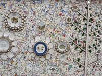
La Maison à Vaisselle Cassée
A former milk-delivery driver and his wife turn their home into a glimmering mosaic.In Louviers, France, Robert Vasseur with the help of his wife decided to deviate from the conventional domestic decorations of wall-paper and paint and decorate their house with mosaics made from sea-shells, broken crockery and twinkling china.
It began in 1952 with an old cement sink that Vasseur embellished with mosaics. From there this eccentric interior-design method continued, first to the interior of his house, then to his backyard and finally all the way throughout his garden. Now the entire property, even the dog house, is covered with these shimmering mosaics. To keep his medium flourishing, Vasseur asked the local garbage man to set aside all of the broken crockery that he collected so that after a thorough cleaning he could use them to help with the mosaic festoons that blanket his property.
Though Robert Vasseur and his wife have passed away, tours of the house are still available through their son who can be reached at 02 32 40 22 71.
Read more about La Maison à Vaisselle Cassée on Atlas Obscura...
Category: Outsider Art, Eccentric Homes
Location: Louviers, France
Edited by: bboas, Rachel
Stork Nest Farm
Mon, 30 Jan 2012 05:00:00 -0600
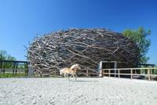
Stork Nest Farm
Czech architects borrow from the nest design of the stork to revitalize a farmstead, hoping to inspire the same loyalty the birds had shown. When Design studio SGL Projeckt was hired to rennovate an old farmstead into a event and recreation center, they found the property was already in use. Since 1926, storks migrating from Africa had come back to the farm to nest in it's chiminey. Inspired by the dedication of the birds and the unassuming simplicity of their nest designs, the architects built a riding arena resembling a giant bird's nest.
The arena, which can be used for riding but also modified quickly for presentations or events, is 34 meters in diameter and 12.5 meters tall. Built with “arced glulam timber beams covered in translucent polycarbonate and a woven nest of oak logs”, the arena can hold up to 200 people for an event, and it's organic design provides ventilation, shade, and a natural skylight.
Read more about Stork Nest Farm on Atlas Obscura...
Category: Architectural Oddities, Outsider Architecture
Location: Benesov, Czech Republic
Edited by: knottedthread, Rachel
Elk Garden
Fri, 27 Jan 2012 10:00:00 -0600
Elk Garden
A Finnish artist's unique fauna statuaryWhen Arja Alhoranta began creating her sculptures in southwest Finland, she had a political agenda and was dedicated to making a statement. But as her work progressed, her message became obscured by a sizable statuary herd of elk, penguins, horses and swans.
Alhoranta decided to begin creating her sculpture garden out of passion, and to prove that women could create large installations. Working to advance feminism by attacking the idea that men are the builders of our species, she set about making life-sized animal statues created out of wood, concrete, and a little help from her trusty chainsaw.
After working tirelessly, she had finally created a few horses, dogs and other smaller animals, along with her pride and joy, the elk. All totaled, Alhoranta created eight elk, and was almost always photographed stroking their noses as one would pet a small lap dog. Besides her work on the statues, Alhoranta also paints during the cold, winter months and creates totems on her property in Finland.
Read more about Elk Garden on Atlas Obscura...
Category:
Location: Pyharanta, Finland
Edited by: serflac, atimian
Pratt Institute Engine Room
Tue, 14 Feb 2012 23:53:00 -0600
Pratt Institute Engine Room
Haven for steampunksPratt Institute was founded in 1887, in the midst of the Industrial Revolution. Due to the advancements in technology, the school was able to build its own steam-powered electrical plant the following year. Two years later, those generators were replaced with the ones that sit on the campus to this very day.
The engine room was powering Pratt with direct current until 1977, but DC had become obsolete and the school had to switch to alternating current. The generators are now purely used for show.
Conrad Milster, the chief engineer since 1958, has dedicated his life to keeping the elaborate machinery in pristine working order. The marble switchboard looks as beautiful and new as it did at the turn of the last century. The generators themselves glisten with their beautiful red paint.
The engine room really comes to life every New Year’s Eve, when Mr. Milster puts on his celebrated whistle show. He has been collecting a vast array of steam-powered whistles for decades, coming off of everything from locomotives to the USS Normandy. Hooked up to the generators and lined up across the campus lawn, the whistles create an overwhelming display of industrial sound and steam.
Read more about Pratt Institute Engine Room on Atlas Obscura...
Category: Inspired Inventions, Cultures and Civilizations
Location: Brooklyn, New York, US
Edited by: HJHausman, Annetta, Rachel
St. Valentine's Relics in Missouri
Tue, 14 Feb 2012 12:34:00 -0600
St. Valentine's Relics in Missouri
Old St. Ferdinand Church is the guardian of a St. Valentine's relicBeing the oldest Catholic church west of the Mississippi, the Old St. Ferdinand Church has more than just a long history of prayer. The church holds within its walls a significant piece of historical importance.
The story of Valentines Day is a romantic yet convoluted one that involves the patron of lovers known as St. Valentine whom helped early Christian couples to marry in secret. Though it is difficult to say who exactly St. Valentines actually is, his history has been preserved not only through the national holiday of Valentines Day but also in the few relics that are scattered all around the world to commemorate him. One of these rare relics can actually be found right inside of the Old St. Ferdinand Church.
Within the church exists the Old St. Ferdinand Shrine which on its own bares an incredible sight to see with its beautiful models of old buildings and outstanding design. Among the many replications that represent fundamental aspects of the Catholic church is the wax replica of St. Valentines in front of the altar. Inside of this life-like replica is one of the relics of St. Valentines that was given to Bishop Louis DuBourg as a gift from the King of France.
The buildings of the Old St. Ferdinand Church have been listed on the National Register of Historic Places because of their collection of irreplaceable historical artifacts.
Read more about St. Valentine's Relics in Missouri on Atlas Obscura...
Category: Relics and Reliquaries, Curious Places of Worship
Location: Florissant, Missouri, US
Edited by: bboas, Annetta
St. Valentine’s Shoulder Blade
Tue, 14 Feb 2012 12:00:00 -0600
St. Valentine’s Shoulder Blade
Relic hidden in a Prague church basementIn 2002, while sorting through the basement at the Church of Saints Paul and Peter in Prague, members of the church stumbled upon several relics. One of which was labeled as the shoulder blade of Saint Valentine. It is believed to have been brought to Prague in the 1300s by Holy Roman Emperor Charles IV, who lived in Vyšehrad, the castle that houses the church. Saint Valentine’s bone is now on permanent display and celebrated with a mass every February 14th.
Little is really known of the real man (or men) behind the myth. What is known (more or less) is that at least two men by the name of Valentine (Valentinus) were known in Italy and died in the late 3rd century, and a third Valentine was located in North Africa around the same time. The two Italians were buried along Via Flaminia. As a saint, Valentine first gained real notoriety in 496 when Pope Gelasius I made February 14, originally part of the Roman festival of Lupercalia, a feast day dedicated to St. Valentine. The stories of the different men seem to have merged into one over time, with most of the mythology about Valentine being a patron of lovers, helping early Christian couples to marry in secret, only dating to the 14th century and the writings of Geoffrey Chaucer.
Today, there are no less than ten places claiming to house the relics, all around the world, including the Basilica of Santa Maria in Rome, Roquemaure, France, and Dublin, Ireland.
Read more about St. Valentine’s Shoulder Blade on Atlas Obscura...
Category: Memento Mori, Relics and Reliquaries
Location:
Edited by: HJHausman, Annetta
St. Valentine's Skull
Tue, 14 Feb 2012 08:40:00 -0600
St. Valentine's Skull
Head of the patron saint of lovers - or is it?A skull resides in a glass reliquary in a small basilica in Rome, surrounded by flowers. Lettering painted across the forehead identify the owner as none other than of the patron saint of lovers, St. Valentine.
Knowing just exactly whose skull it is, though, is complicated. First off, there was more than one Catholic saint known as Saint Valentine. Then there's the approximately 1500 years between those martyr's deaths and the enthusiastic distribution and labeling of bodies in the Victorian era. Finally, and most troubling, there is the fact that no less than ten places claim to house the relics, all around the world.
Little is really known of the real man (or men) behind the myth. What is known (more or less) is that at least two men by the name of Valentine (Valentinus) were known in Italy and died in the late 3rd century, and a third Valentine was located in North Africa around the same time. The two Italians were buried along Via Flaminia. As a saint, Valentine first gained real notoriety in 496 when Pope Gelasius I made February 14, originally part of the Roman festival of Lupercalia, a feast day dedicated to St. Valentine. The stories of the different men seem to have merged into one over time, with most of the mythology about Valentine being a patron of lovers, helping early Christian couples to marry in secret, only dating to the 14th century and the writings of Geoffrey Chaucer.
The church itself is very old, standing on the site of an ancient Roman temple dating to the second century BC. Most of what you see today dates to the 8th and 12th centuries, including the crypt located beneath the altar.
The skull can be found in the side altar on the left side of the church. While you are at the Basilica of Santa Maria, stop by the portico to visit with the famous Bocca della Verità (mouth of truth).
Read more about St. Valentine's Skull on Atlas Obscura...
Category: Memento Mori, Relics and Reliquaries
Location: Roma, Italy
Edited by: Annetta, Nicholas Jackson, phoolish, Rachel
Relics of St. Valentine in Roquemaure
Tue, 14 Feb 2012 08:00:00 -0600
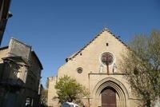
Relics of St. Valentine in Roquemaure
Celebrate the end of the Great French Wine Blight with a festival of kissingIn 1866 the vineyards of Roquemaure, France were descended upon by tiny, voracious insects. These phylloxera caused so much damage it became known as the Great French Wine Blight.
In an appeal for holy intervention, a local land owner - and presumed wine enthusiast - made a pilgrimage to Rome and allegedly returned in October 1868 with the saint's relics in tow. It is unclear exactly how much or which parts of the saint were brought back, but the saint's flower-bedecked skull is still on display in the eternal city.
Today the the arrival of the saint's relics are celebrated in the town with a festival known as La Festo di Poutoun, or the "festival of lovers and kissers" on or near February 14, somewhat incongruously paired with locals decked out in fussy Victorian attire. During the festival the relics are taken out from the church where they usually reside and are carried through the streets.
Little is really known of the real man (or men) behind the St. Valentine myth. What is known (more or less) is that at least two men by the name of Valentine (Valentinus) were known in Italy and died in the late 3rd century, and a third Valentine was located in North Africa around the same time. The two Italians were buried along Via Flaminia. As a saint, Valentine first gained real notoriety in 496 when Pope Gelasius I made February 14, originally part of the Roman festival of Lupercalia, a feast day dedicated to St. Valentine. The stories of the different men seem to have merged into one over time, with most of the mythology about Valentine being a patron of lovers, helping early Christian couples to marry in secret, only dating to the 14th century and the writings of Geoffrey Chaucer.
Today, there are no less than ten places claiming to house the relics, all around the world, including the Basilica of Santa Maria in Rome.
Read more about Relics of St. Valentine in Roquemaure on Atlas Obscura...
Category: Relics and Reliquaries
Location: Roquemaure, France
Edited by: Annetta, Rachel
Lava River Cave
Mon, 13 Feb 2012 10:30:00 -0600
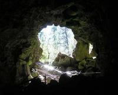
Lava River Cave
The longest continuous lava tube in OregonThe Lava River Cave, located 12 miles (19 kilometer) south of Bend on the east side of Highway 97 and part of the Newberry National Volcanic Monument, is a prime example of a lava tube. Measuring in at 5,211 feet (1,588 m) in length, the northwestern section of the cave is the longest continuous lava tube in the state of Oregon.
Although the official discovery of the cave was credited to a pioneer hunter back in 1889, archaeologists have found the presence of obsidian flakes near the cave and believe that Native Americans knew about the cave long before settlers ever arrived in central Oregon.
80,000 years ago a volcanic eruption formed the Lava River Cave. The volcanic flow that formed the cave also underlies much of the Bend area, and even almost reaches Redmond, Oregon. The Lava River Cave itself was created by lava flowing from a volcanic vent that flowed northwest from the vent toward the Deschutes River.
Read more about Lava River Cave on Atlas Obscura...
Category: Natural Wonders, Geological Oddities, Curious Caves
Location:
Edited by: TrevorShawnElia, Rachel
Sacramento Old City Cemetery
Mon, 13 Feb 2012 10:15:00 -0600
Sacramento Old City Cemetery
Sacramento's Oldest Existing CemeteryTake a tour of this beautiful old cemetery to see graves of California Gold Rush-era governors, murderers, criminals, ladies of the night, Chinese immigrants, and other historical persons of interest. The Old City Cemetery is adjacent to the Historic Volunteer Firemen's Plot. Several different guided tours are available throughout the year, including the popular night-time Lantern Tours given before Halloween.
Daytime walking tours are free and are led by volunteer docents. Self-guided tour brochures are also available. This cemetery, originally designed in the style of a Victorian garden, was practically abandoned by the city of Sacramento until a group of dedicated individuals decided to care for it in the 1980's. Due to budget restrictions the visiting hours change often- check the website before you plan to visit.
Read more about Sacramento Old City Cemetery on Atlas Obscura...
Category: Catacombs, Crypts, & Cemeteries
Location:
Edited by: cellogrl, Rachel
Annapurna
Thu, 09 Feb 2012 23:00:00 -0600
Annapurna
Named after the Goddess of Harvests, Annapurna is the deadliest member of the Eight-thousanders clubThere are 14 independent peaks that make up the “Eight-thousanders”, an elite group of mountains that tower more than 8,000 meters (26,247 ft) above sea level, all of which lie in the Himalayan and Karakoram ranges in Asia. The most popular of these mountains, Mount Everest, has taken the lives of many a brave or foolhardy explorer, but there is another Eight-thousander that makes Everest look like a kiddie ride. Her name is Annapurna.
Since the first recorded ill-fated expedition of Albert F Mummery and J. Norman Collie in 1895, men and women have been compelled to conquer these peaks, and ironically the first successful ascent was located on Annapurna by famed adventurers Maurice Herzog and Louis Lachenal in 1950. The expedition was successful, but not without a heavy cost -- Herzog lost the majority of his fingers and toes to frostbite, and to stave off gangrene, had to perform amputations on the mountain, sans anesthetic. No one dared to climb Annapurna again for 20 years.
Annapurna is not the tallest mountain-In fact, it's 10th tallest on the list of the 14. Yet it currently has a fatality to summit ratio of 38% which was only recently improved from 40%, still the highest fatality rate of any of the Eight-thousanders. Why it claims so many lives is uncertain, although the glacial architecture and the illusions it produces have been cited as examples of it's treachery. Whatever the reason, this quiet giant with the difficult south slope has called over 200 explorers to her snowy cliffs, and decided to keep over 50 of them as her own.
Read more about Annapurna on Atlas Obscura...
Category: Natural Wonders, Geological Oddities, Dead Explorers
Location: Himalayas, Nepal
Edited by: Rachel, Seth Teicher, Dylan
Tiger & Turtle Magic Mountain
Wed, 08 Feb 2012 21:26:00 -0600
Tiger & Turtle Magic Mountain
No need to strap in for a "ride" on this walkable roller coasterThe first impression given by this 69 ft. sculpture is that it's like any other roller coaster, with twists and turns and the ever-thrilling loop-the-loop. A closer look reveals that this is no free ride-to take on the curves of this metal giant, you'll have to start walking.
German artists Heike Mutter and Ulrich Genth created “Tiger & Turtle-Magic Mountain” out of zinc and steel left over from local mining operations, and it's main purpose is to exist as an unusual venue to view the gorgeous German countryside around it. While a little disappointing that physics don't allow for passage around the loop, you can still work off that amusement park lunch at the speed of a turtle, on a structure that represents the speed of a tiger. With 249 steps making up the walkway, and LED lights so that the climb can be appreciated after dark, this twisted metal track gives you a chance to see this classic ride from an entirely new perspective day or night.
Read more about Tiger & Turtle Magic Mountain on Atlas Obscura...
Category: Outsider Art, Unusual Monuments, Architectural Oddities
Location: Duisburg, Germany
Edited by: Rachel
Moses Bridge
Wed, 08 Feb 2012 20:12:00 -0600
Moses Bridge
Invisible bridge parts the waters, invoking biblical images and preserving the ominous feel of an ancient moatOnce an active defense-line dating back to the 17th century, the West Brabant Line is made up of fortresses and cities with an inundation zone to the north, used as moats deep enough to dissuade marauders on foot, but too shallow to allow for boats. The line fell into disrepair in the 19th century, but a recent restoration program has been in motion, which led to this peculiar “invisible” bridge.
Fort de Roovere is the largest fort on the line, and particular attention has been paid to transform it into a recreational area for cycling and hiking. Not wanting to disrupt the appearance of the moat by adding an obviously ill-advised bridge, but needing a bridge for access regardless of a yearning for historical accuracy the Moses Bridge was the miracle solution.
The bridge, made completely out of waterproof wood, lies like a trench and disappears into the landscape, but from the vantage point of above or either end, the bridge parts the waters, reminiscent of the prophet it named after. In the case that you are lacking the faith to walk down into and under the water line, the RO&AD architects who designed the bridge assure that flooding would not be an issue. The height of the water is controlled by adjustable dams at both sides of the moat, ensuring that when the water rises, it reaches the dams before the bridge, which also includes a pump just in case the dams overflow.
The discreet entry to the fort makes it possible to enjoy the area without ruining the moat's presence, and gives you the powerful impression that the waters have parted, just for you.
Read more about Moses Bridge on Atlas Obscura...
Category: Architectural Oddities, Outsider Architecture
Location: Halsteren, Netherlands
Edited by: Rachel
Enchanted Forest Theme Park
Tue, 07 Feb 2012 16:08:00 -0600
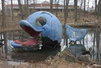
Enchanted Forest Theme Park
Remnants of a storybook amusement park hidden behind a strip mallOpening in 1955 (a month after Disneyland), The Enchanted Forest was a roadside amusement park in Ellicott City, Maryland that featured figures from nursery rhymes and fairy tales.
Visitors paid less than $2 to clamber through Cinderella's castle, ride through the caves of Ali Baba and the Forty Thieves and take a teacup ride to the underground scenes from Alice in Wonderland. On a large excavated pond, guests rode the Little Toot tugboat and visited Mount Vesuvius and Jungle Land.
After nearly three decades of operation, the park grew to over 52 acres, drawing close to 400,000 visitors each summer during its prime in the late 1970s and early 1980s.
Unfortunately, The Enchanted Forest began to face tough competition from the roller coaster theme parks that were being built in the Baltimore area. Enthusiasm for a low-tech park eventually faded and led to an inevitable close in 1989.
While the Eastern side of the park was bulldozed to allow room for a shopping mall, the other half remains untouched. Many of the artifacts were moved to Clark’s Elioak Farm, but a few tattered attractions still remain scattered among the brushy undergrowth.
Faded cement gingerbread men, which once formed a welcoming border along Route 40, are now clumped together like crooked tombstones. The sagging Dish and Spoon, with flaking paint, are propped against the fence. The dilapidated Willie the Whale still floats on the pond.
Today, the carefree sensations that once permeated the park are lost, only to be replaced by a grim sense of nostalgia and unease.
Please note that the property is currently off limits and trespassers will be prosecuted.
Read more about Enchanted Forest Theme Park on Atlas Obscura...
Category: Architectural Oddities, Incredible Ruins
Location: Normandy Heights, Maryland, US
Edited by: Duck_Muscle, Rachel
Win Sein Taw Ya
Mon, 06 Feb 2012 23:03:00 -0600
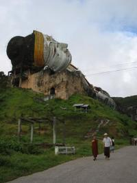
Win Sein Taw Ya
The world's largest reclining Buddha, the Giant Buddha of MudonWin Sein Taw Ya is the largest reclining Buddha in the world, and at 30 meters high and 180 meters in length can be seen for miles. Located opposite of the Buddhist shrine of Kyauktalon Taung, the reclining Buddha is filled with rooms that showcase dioramas of the teachings of Buddha and a shrine. When visiting the giant Buddha it should be remembered that despite the odd novelty of walking into a giant head, it is still a place of worship, and shoes should be removed before entering the shrine.
Read more about Win Sein Taw Ya on Atlas Obscura...
Category: Strange Statues, Curious Places of Worship, Giant Buddhas
Location: Mudon, Myanmar
Edited by: Burmats, Rachel
Pollock's Toy Museum
Mon, 06 Feb 2012 11:10:00 -0600
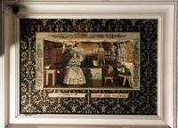
Pollock's Toy Museum
A toy store with a century-long history preserves the craftsmanship of playthings of the past.In a dimly lit Victorian building with rickety staircases, the china dolls and tin soldiers sit patiently on dusty shelves awaiting their visitors. The toy theatres of the 1800's, an all but forgotten craft that required intricate printing plates and lovingly constructed characters are displayed as if they never fell out of favor.
The Pollock's Toy Museum is named after Benjamin Pollock, one of the last printers in the toy theatre trade. A hugely popular pastime of the 1800's, people enjoyed assembling the craft kits that would unfold into their favorite stage plays, and allow them to reenact those performances at home with their families. In the 19th century, stage theatre began to shift into formats that didn't lend themselves easily to the toy theatre, and they fell out of favor.
Dedicated to preserving and appreciating the lost art of toy theatre, as well as all other types of antique playthings, the 100 year old toy shop turned museum is now housed in two adjacent buildings that serve as a retail shop as well. The displays, while appropriate for all ages, are not for those easily disturbed by leering string puppets or glass-eyed baby dolls.
Read more about Pollock's Toy Museum on Atlas Obscura...
Category: Unique Collections, Commercial Curiosities, Purveyors of Curiosities
Location: London, United Kingdom
Edited by: serflac, Rachel
Blur Building
Sun, 05 Feb 2012 23:33:00 -0600
Blur Building
In memory of The Blur Building, the temporary exhibition pavilion of vaporous nothingness.The Blur Building was a temporary media pavilion built for the 2002 Swiss Expo in Yverdon-les-Bains, Switzerland. Rising out of Lake Neuchatel, a system of rectilinear struts and diagonal rods cantilevered over the water. The rods were fitted with over 30,000 fog nozzles shooting a fine mist pulled from the lake and controlled with a complex weather system. This fog created a man-made cloud that encompassed the metal framework to create the illusion of a vaporous building measuring 300 ft. wide and 65 ft. high.
Before walking the 400 ft. ramp that led to the center of the “building”, visitors were given a personality test and “braincoats”, a raincoat that stored all of the personal data collected by the test to create a profile for the wearer. This profile could be identified by the cloud's computer network, which was able to locate each participant and identify them. As visitors arrived on the structure, when they passed each other, the braincoats analyzed the profiles, and changed colors depending on compatibility with the person next to them. Once inside, visitors could challenge their senses immersed in white noise and white-out visual conditions, or head upstairs through the mist to the Angel Bar, where they were served a sampling of waters from all over the world.
This perception-altering exhibition, the creation of architects Elizabeth Diller and Ricardo Scofidio, was unfortunately not built to be a permanent structure, and no longer exists.
Read more about Blur Building on Atlas Obscura...
Category: Architectural Oddities, Outsider Architecture
Location: Yverdon-les-Bains, Switzerland
Edited by: Rachel
Museum of Broken Relationships
Fri, 03 Feb 2012 03:19:00 -0600
Museum of Broken Relationships
Where the lovelorn find a home for their sentimental keepsakes We all have different ways of dealing with the mementos left behind when a love is lost. Unable to let go, some of us hide the barrettes he gave us before he left town to “find himself” in a ornate box under the bed, while others burn photos taken of her before she was caught texting a “friend.” The most mundane items in the world suddenly represent everything that might have been.
When Croatian artists Olinka Vistina and Drazen Grubisic separated, their reluctance to part with the sentimental reminders of their fizzled love inspired them to open the Museum of Broken Relationships, so that the items could remain together.
At first glance, this concept may seem to contradict healthy healing, but the idea took off, and while the museum was on tour, people from all over began to donate their reminders of heartbreak. Now the museum has a permanent home in Croatia, and contains a fascinating collection of former tokens of affection. Besides the anticipated teddy bears and letters, the collection also includes a few poignant and sometimes unsettling surprises -- a tiny bottle filled with a woman's tears, an axe and taser gun, and perhaps the strangest offering, a prosthetic leg.
As melancholy of a subject as it may seem, the museum is quite popular -- be it voyeurism, purification, or just the acknowledgment that the lonely feeling of heart sickness is universal, over 1,000 people a week visit the collection.
Read more about Museum of Broken Relationships on Atlas Obscura...
Category: Museums and Collections, Unique Collections
Location: Zagreb, Croatia
Edited by: Rachel, Seth Teicher
Glendurgan Garden Maze
Fri, 03 Feb 2012 02:00:00 -0600
Glendurgan Garden Maze
The twists and turns of this serpentine maze are over 170 years old.In its earliest beginnings in the 1820s, Glendurgan Gardens was thoughtfully laid out to sustain its design for ages to come, and like most amazing landscapes, it took ages to arrive at its current glory. Starting out as the private gardens of Alfred Fox, his family continued to develop his work after his passing, and in 1962 it was handed over to the Natural Trust.
The gardens offer a stunning array of rare and exotic plants that Fox acquired in his travels working with a shipping company, but the true jewel of the site is the maze. Designed to mimic the appearance of a serpent curled lazily in the grass, Fox planted the maze over 170 years ago using cherry laurel, a flowering hedge known for its dense foliage. Wanting the maze to be a challenge, its coils stretch three quarters of a mile from exit to entrance, endlessly spiraling around itself in tight, manicured circles.
While it's suggested that you leave yourself a generous amount of time to navigate your way through, those easily turned around or too impatient to walk the entire thing can cheat by having a friend call directions out from a hillside vantage point.
Read more about Glendurgan Garden Maze on Atlas Obscura...
Category: Extraordinary Flora, Horticultural Marvels, Mazes
Location: Falmouth, United Kingdom
Edited by: serflac, Rachel, Seth Teicher
The St. John's Bible
Thu, 02 Feb 2012 11:22:00 -0600
The St. John's Bible
The first hand-illuminated, hand-written bible since the invention of the printing pressThe lifelong dream of prolific calligrapher, Donald Jackson, to create a hand-illumanited and hand-written bible came true in 1998 through what is now known as the "Bible project".
The Bible project was commissioned by the Benedictine Church at St. John's University in 1998 and was scheduled for completion in 2011, however its detailed process has pushed the deadline back to an undetermined date. Donald Jackson being the official scribe of Queen Elizabeth II created his own script specifically for this project. Using the New Revise Standard Version Catholic Edition (NRSV-CE), the St. John's Bible is made of vellum, it cost over $4 million dollars to produce, and contains seven volumes. The sight of the Bible itself is impressive seeing as the books are two feet tall and three feet wide when open.
You can visit The Saint John's Bible at one of the touring exhibitions, or at the Hill Museum & Manuscript Library on the campus of Saint John's University. If you are unable to make it in person you can get a good look at the Bible through the images and information on this web site.
Read more about The St. John's Bible on Atlas Obscura...
Category: Astounding Timepieces, Rites and Rituals
Location: Collegeville, Minnesota, US
Edited by: bboas, Annetta, Rachel, Seth Teicher
Waco Mammoth Site
Thu, 02 Feb 2012 00:45:00 -0600
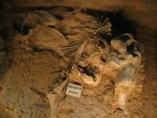
Waco Mammoth Site
Visitors can walk over the largest concentration of Columbian mammoths to have died from one eventIn 1978, two men were hunting for arrowheads along the Bosque River in Waco, Texas, and came upon a curiously large bone. When they took it to be examined at the nearby Baylor University, they spurred an archaeological dig that would eventually uncover the remains of 24 Columbian mammoths that roamed Texas in the Ice Age. The site is the largest known concentration of Columbian mammoths to have died from one catastrophic event.
16 of the mammoths were removed and are held in storage at Baylor to protect them from deterioration, but a crowd of fossils is still at the site. In a climate-controlled pavilion opened in 2009, visitors can walk above the fossils of the giant-tusked creatures, which are still embedded in the dirt.
The majority of the mammoths are believed to have perished in a mudslide that occurred around 68,000 years ago. A nursery herd of 19, composed of females and their young, were caught in sudden floods, the adults attempting, but failing, to save the young mammoths by lifting them from the mud. The other skeletons at the site appear to have died during another flood that occurred many years later. A prehistoric camel (which might have died during the first mudslide) and the remains of a large cat were also unearthed at the site. There are indications that additional fossils could still be discovered in the surrounding area, including more mammoths.
Read more about Waco Mammoth Site on Atlas Obscura...
Category: Fascinating Fauna, Natural History
Location: Waco, Texas, US
Edited by: allison
Nautilus House
Wed, 01 Feb 2012 13:17:00 -0600
Nautilus House
Fantastical house shaped like a seashell brings aquatic design to architectureA young family tired of their conventional home yearned to live in something a little more intergrated with nature. Their wish was granted by Javier Senosiain of Senosiain Arquitectos, a celebrated Mexican architect whose work is considered both pioneering and controversial in the field of bioarchitecture. Instead of a boring old practical square dwelling, they now live inside a giant psychedelic mollusk shell.
According to Senosiain, the Nautilus House is earthquake-proof and maintenance-free. While not the best use of space and decidedly short on storage, it's hard not to be envious of the family who gets to come home to a wonderland straight out of a Lewis Carroll novel. Using a technique called ferrocement construction, a frame of steel-enforced chicken wire is coated with concrete, allowing for rounded, natural curves, the inside is full of spirals, circles, and organically shaped rooms that mimic the concave chambers one would expect inside a giant mollusk. Hundreds of small rainbow-colored stained-glass windows line spaces of ceiling and walls alike, sunning lush grass that surrounds flower-shaped couches. Using a pairing of artistic freedom and attention to detail, the Nautilus House is a wonderous demonstration of creating human abodes using nature's design and possibly a mind-altering substance.
Read more about Nautilus House on Atlas Obscura...
Category: Architectural Oddities, Eccentric Homes
Location: Naucalpan de Juarez, Mexico
Edited by: Rachel
Nevada County Hospital
Tue, 31 Jan 2012 14:33:00 -0600

Nevada County Hospital
Abandoned hospital with sinister history lies empty on the edge of town it served for 150 years.Though it served different purposes throughout the years, the Nevada County Hospital was built in 1860 to care for the indigent sick of Nevada City, a Gold Rush boomtown deep in the Sierra Nevada Mountains. Like many mining towns in the area, Nevada City's population and needs changed with the industry, and the hospital underwent many revisions, serving as a morgue, poor house, general hospital, housing for low-risk inmates, welfare office, and finally as the Behavioral Health clinic with out-patient offices.
It was in this final incarnation that the hospital served as the setting for a tragic 2001 shooting that shook the community-A mental health out-patient suffering delusions opened fire in the facility, killing two employees. He then drove to a nearby restaurant, killed the manager and wounding the cook. Despite the killing spree, the hospital remained open until 2006, when the county moved their offices to a new location.
The 152 year-old hospital site has now been sitting abandoned for years as the county decides on its historical status, and whether the building itself is too toxic to inhabit. Brave explorers are now the only visitors to its water-stained hallways, poking through left behind paperwork and daring each other to enter the spooky boiler room. The murders prompted “Laura's Law”, a California law allowing court-ordered out-patient treatment for the mentally ill showing signs of potential violence. It was named after Laura Wilcox, a 19 year-old receptionist killed in the massacre.
Read more about Nevada County Hospital on Atlas Obscura...
Category: Crime and Punishment, Incredible Ruins
Location:
Edited by: Rachel, Dylan
les Escaules
Tue, 31 Jan 2012 04:00:00 -0600
les Escaules
At the foot of a waterfall lies a peaceful swimming lagoon and evidence of over 60,000 years of human inhabitation.On a hilltop overlooking the Muga Valley stands the remains of Escaules castle, the medieval fortification that once monitored the border between the counties of Empúries and Besalú. From this vantage point you can see the charming village of les Escaules, it's olive orchards, and the ruins of the ancient Escaules monastery, but these hills hide history much older than relics of the Middle Ages.
The Caula waterfall, located just west of the village, falls 30 meters until it joins the Muga River, and is riddled with jutting cliffs and hidden caves. In 1980, excavations uncovered polished stones and ceramics, as well as lithic industry artifacts of the lower-mid Palaeolithic, suggesting that the caves had been inhabited for more than 60,000 years.
Read more about les Escaules on Atlas Obscura...
Category: Curious Caves, Cultures and Civilizations , Incredible Ruins
Location: Girona, Spain
Edited by: serflac, Rachel
Mayerling Lodge
Mon, 30 Jan 2012 15:25:00 -0600
Mayerling Lodge
Site of the 1889 murder-suicide of crown prince Rudolf and his lover Mary VetseraFor reasons that have never been entirely understood, sometime during the night of January 29, 1889 crown prince Rudolf of Austria shot and killed his lover and then took his own life, thereby setting off a chain of events that changed the fate of Europe. The murder-suicide became known as the Mayerling Affair, after the hunting lodge where it took place.
Rudolf was the son and heir to the Hapsburg Emperor Franz Josef I of Austria and the famously beautiful and infamously melancholy Empress Elisabeth. Young Rudolf seemed to be a very different type than his cold and calculating father, developing an early passion for the natural sciences, liberal politics, and a somewhat more delicate sensibility in general.
By the time Rudolf was wed to Princess Stephanie of Belgium in 1881, he had already established the other habit that would appear to be his undoing: a certain weakness for the ladies - in fact, he allegedly brought a lover with him to his wedding.
Within a few short years, the marriage devolved into a relationship of mutual tolerance. Rudolf's womanizing, drinking, and more recently acquired drug habit took over his life, apparently leading him in a downward spiral.
Mary Vetsara on the other hand, appeared to be a young woman very much smitten with the prince. The 17 year old baroness, however, was not Rudolf's first choice for his suicide pact. He actually attempted to convince another woman, a prostitute named Mitzi Caspar, to die with him, but she declined his offer.
Mary and Rudolf left Vienna for the hunting lodge in Mayerling on January 29th, 1889, the prince claiming he wanted to do a bit of hunting the following morning. Sometime in the night, Rudolf shot and killed Mary, and then turned the gun on himself. When the staff came to the door in the morning, the bodies were discovered.
A massive cover-up operation followed, with the royal family attempting to pass off Rudolf's death as one of natural causes, and to hide Mary's body entirely.
Today, Rudolf is buried in the Hapsburg family crypt in Vienna, and Mary's body lies in a modest grave in Heiligenkreuz, Austria.
Rudolf's death left Franz Josef I without an heir, leading to the succession of Franz Ferdinand whose assassination in 1914 kicked off the hostilities of WWI, and effectively led to the end of the Hapsburg dynasty.
After the deaths, the lodge was transformed into a Carmelite church, where services are still said in memory of Rudolf. A small museum houses artifacts related to the deaths.
Read more about Mayerling Lodge on Atlas Obscura...
Category: Memento Mori, Curious Places of Worship
Location: Mayerling, Austria
Edited by: Annetta
The Curio Emporium
Mon, 30 Jan 2012 05:30:00 -0600
The Curio Emporium
Delve into a wealth of oddities, antiques, and taxidermy treasures.When stepping into The Curio Emporium in South Pasadena, the color shift to sepia is so complete, only a peek out the window will lend assurance that you haven't slipped into a gothic Jules Verne fantasy. Surrounded by a handpicked selection of unusual antiques, taxidermy displays, and creepy creations, your envelopment into the world of the Emporium is made complete by the tinkling music of long ago pouring out of some hidden modern device behind the counter.
A proper curio shoppe isn't complete without eccentric, loving owners that can tell you the story of every curious object and the history of every unusual antique taking temporary residence on their shelves. David Constantine and Jenna Macabre move effortlessly around the store in full Victorian era dress, taking time to answer any questions you may have about the two-headed duckling, or relay the history of a vintage prosthetic metal hand. Their eclectic collection spans many eras and represents genres both real and imagined, seamlessly combining authentic medical, militaria, and Victorian antiques with their captivating steampunk and gothic-inspired artwork and taxidermy.
As all of their items are antique or one-of-a-kind, each visit will reveal a new pocket watch, a set of old photos that weren't there before, and that child-size gas mask from the Cold War you didn't know you needed. The downside of this being that chances are the adorable stuffed bat hanging in the antique birdcage you promised to pick up next time could very well be gone. Prices are more than reasonable, so you have no excuse.
Affordable Antiques, Oddities, Militaria, Taxidermy & Steampunk Accessories
Read more about The Curio Emporium on Atlas Obscura...
Category: Commercial Curiosities, Purveyors of Curiosities
Location:
Edited by: Rachel
Chucuito Temple of Fertility
Fri, 27 Jan 2012 13:00:00 -0600
Chucuito Temple of Fertility
Ancient Peruvian fertility temple or modern money-making hoax? Either way these monoliths still look like penisesChucuito is one of the few ancient sites in the world that is likely to elicit a few giggles. In many ways, you're supposed to giggle when you walk through the walled-off complex covered in row after row of stone phalluses. Especially considering that this supposed ancient fertility clinic may just be a hoax catering to the immaturity of tourists.
For more than half a century, archeologists and anthropologists have studied Chucuito Temple of Fertility, and have decided, with some debate, that the stones were placed in this order more recently than they were quarried and cut. Scientists even discovered that many of the stones were not originally set straight up, indicating that a perverse opportunist may have had a hand in the temple's creation. Yet the findings of the scientists mean little to locals who work day in and day out to dispel these claims by giving tours of the temple.
Altogether, there are 86 phallic stones in the temple, and some even stretch to five feet. According to legend, and most tour guides in the city, this temple was frequented by women trying to get pregnant. Under the guidance of a spiritual leader, women would climb aboard the mushroom rocks and be doused in chicha, traditional Peruvian corn beer, which allegedly helped them become pregnant.
Adding to the confusion created by this legend, the site, which is named Inca Uyo, can be translated two ways. In Quechua, it means field, a perfectly logical translation. But a more modern twist translates the word into penis, which unfortunately fits the other side of the debate similarly well. Although no definitive answer will ever be discovered, the rocks resemblance to male genitalia remains uncanny.
Read more about Chucuito Temple of Fertility on Atlas Obscura...
Category: Hoaxes and Pseudoscience, Rites and Rituals
Location: Playa Arenilla, Peru
Edited by: serflac, atimian
Statue of José Maria Morelos
Fri, 27 Jan 2012 09:00:00 -0600
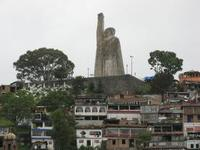
Statue of José Maria Morelos
Climb through the life of a Mexican hero as you ascend a 130-foot statueApproaching the tiny island of Janitizio by boat, there is no way to miss the towering Statue of José Maria Morelos. Standing 130-feet high over Lake Patzcuaro, the spiraling stairway that leads to the top of the statue tells the hero's story through sweeping murals the entire way up to the top.
José Maria Morelos was a revolutionary leader during Mexico's quest for independence and was executed by the Spanish government. Embraced across the country, this statue was erected in 1933 to honor his memory. Standing with one proud fist in the air, the statue is set on the hill in the center of the island, making it the most prominent part of the central-Mexican landscape.
Almost resembling the famous Christ the Redeemer statue in Rio, the Statue of José Maria Morelos takes heroic imagery one step further by doling out a history lesson on the way to the spectacular views at the top.
Read more about Statue of José Maria Morelos on Atlas Obscura...
Category: Unusual Monuments, Strange Statues
Location: Isla Pacanda, Mexico
Edited by: serflac, stevelarson, atimian